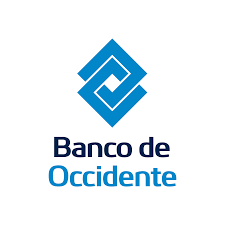
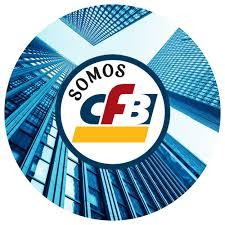

Banco de Occidente
 Quiénes Somos
Somos una entidad financiera colombiana perteneciente al Grupo Aval Acciones y Valores, con sede principal en la ciudad de Cali, ciudad donde nacimos el 3 de mayo de 1965, tenemos una amplia trayectoria y experiencia, bajo una cultura de liderazgo, innovación, oportunidad y efectividad que ha contribuido a generar relaciones a largo plazo con nuestros clientes.
Benenficicos de nuestros distintos Créditos
Crédito Vehícular
Ω Solicita la aprobación tu crédito vehicular, rápido y sin papeles a través de nuestra plataforma en menos de 5 minutos
Ω Hasta 100% de financiación
Ω Acompañamiento personalizado
Ω Hasta 84 meses de financiación
Crédito Vivienda
Ω Para vivienda nueva o usada
Ω Acompañamiento durante todo el proceso
Ω Atención exclusiva y personalizada
Ω Amplio portafolio de seguros
Ω Certificación de proyecto sostenible
Beneficios de nuestra Cuenta de Corriente
Cuenta Corriente
Ω Liquidez inmediata a través de tu cupo de sobregiro y sobrecanje.
Ω Disponibilidad de tu dinero con tu Tarjeta Débito Activa.
Ω Programa el pago automáticode tus obligaciones.
Ω Realiza consultas y transacciones a través de nuestros canales digitales.
Beneficios de nuestra Cuenta de Ahorros
Cuenta de Ahorros
Ω Aprobación en 5 minutos y sin papeles
Ω Canales digitales para pagos, avances y transferencias
Ω Acompañamiento para la apertura de tu cuenta
Ω Acceso a preventas exclusivas
Ω Disfrutar de una apertura de cuenta de ahorros sin documentos físicosli.mt-1 Apertura en 8 minutos 100% digital
Ω Agilidad y seguridad
Ω Exoneración cuota de manejo y tarifa por retiros en cajeros automáticos durante los primeros 6 meses
Ω Entrega de Tarjeta Débito a domicilio
Ω Retiros en cajeros automáticos con OTP (sin tarjeta) y transferencias entre bancos del Grupo Aval y Transfiya
Ω Una amplia red de cajeros electrónicos, corresponsales bancarios del Grupo Aval para realizar transacciones, Avalpay, App y portal transaccional
Ω Posibilidad de domiciliar pagos de servicios públicos y privados, así como obligaciones financieras
Ω Exoneración de GMF (Gravamen a los Movimientos Financieros) para los clientes que apliquen
Ω Extracto electrónico
Ω Acceso a Experiencias Aval
Ω Líneas de atención, CataBot o WhatsApp
Ω Ahorro para cumplir metas y propósitos
Ω Seguridad para tus ahorros con respaldo del seguro fogafín
Beneficios de Tarjetas de Crédito
Tarjeta de Crédito
Ω Paga en segundos, de manera segura y sin contacto con la tecnología Contactless
Ω Accede a las preventas exclusivas Aval
Ω Acumula puntos para redimir en catálogo, viajes, Amazon y más
Ω Amplia el plazo de tus compras a 48 cuotas para flexibilizar tu flujo de caja
Beneficios de nuestras Cuentas de Inversión
Inversión
Ω Mantén disponibles tus recursos para lo que necesites
Ω Realiza tu inversión desde $200.000 y asume un bajo riesgo
Ω Vincúlate digitalmente sin intermediarios, en menos de 5 minutos.
Ω Sin pacto de permanencia.